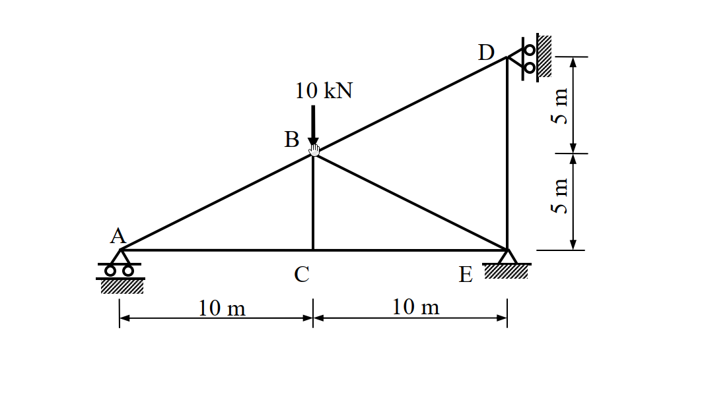
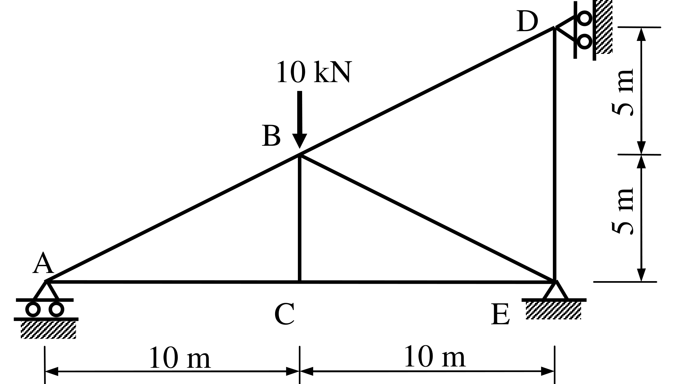
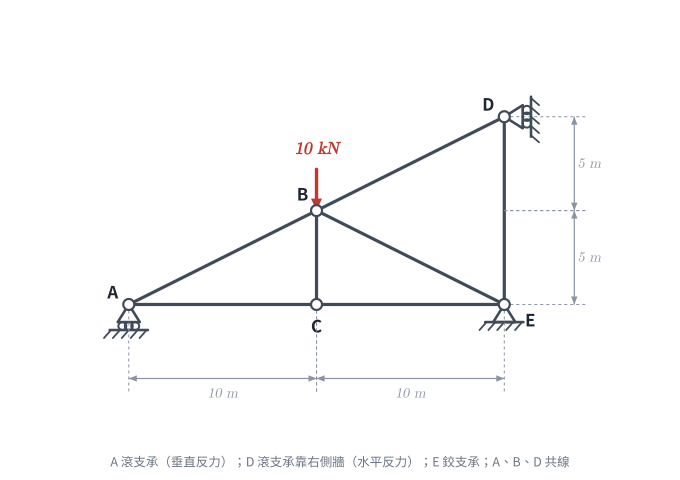
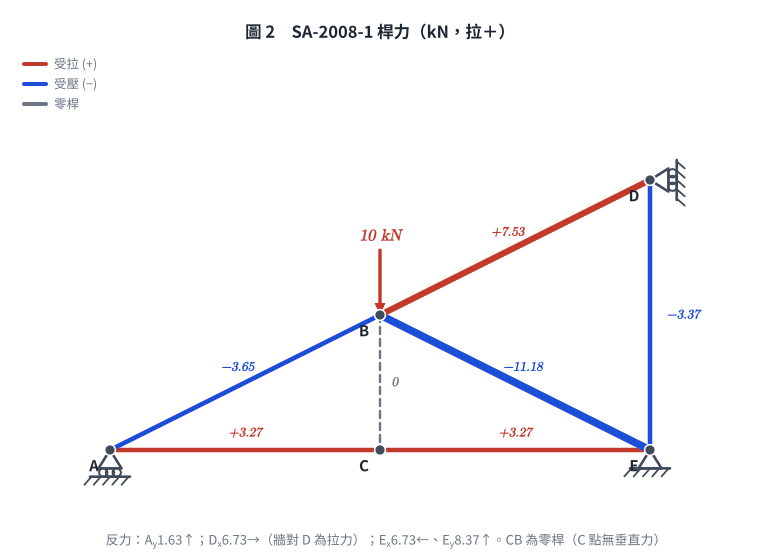

📄 題目正本（考卷原文、附圖與判讀清單；不含解法）
SA-2008-1 題目正本
本檔只記錄考卷上寫了什麼、圖上畫了什麼，不含任何解法。解析見同資料夾
SA-2008-1.md。
判讀清單經使用者確認前，狀態為「待確認」；確認後本檔原則上不再修改（改動須回考卷原圖並記 log）。
| 項目 | 內容 |
|---|---|
| 考卷 | raw/exams/SA-2008_結構學.pdf，第 1 頁（正面），第一題（無圖號） |
| 考年 | 2008（民國 97 年）專技高考結構工程技師「結構學」 |
| 配分 | 25 分 |
| 附圖 | SA-2008-1-fig-1.png、SA-2008-1-fig-2.png |
| 判讀狀態 | 已確認（2026-11-07 使用者確認；原轉錄：2026-11-07 轉錄；PyMuPDF 110 dpi 整頁＋400–1200 dpi 局部放大；PDF 向量繪圖；盲讀於開啟解析前完成） |
1. 考卷原文（逐字）
一、如圖所示桁架（truss），A、D 兩點為滾支承（roller），E 點為鉸接（hinge）。若每根桿件的彈性模數E 與斷面積A 為常數，當B 點有一垂直載重10 kN 時，計算支承之反力及各桿件內力。（25 分）
2. 考卷給的公式、附表與參數
- 考卷沒有給任何參考公式或附表。
- E、A 只說是常數，沒有數值（各桿相同）。
- 卷首注意事項：㈠不必抄題，作答時請將試題題號及答案依照順序寫在試卷上，於本試題上作答者，不予計分。㈡可以使用電子計算器，但需詳列解答過程。
- 考試時間：2 小時。
3. 附圖

證據圖 SA-2008-1-fig-1.png

證據圖 SA-2008-1-fig-2.png（2026-11-07 自考卷重新擷取 500 dpi，無游標）
圖面文字照錄：D、10 kN、B、5 m、5 m、A、C、E、10 m、10 m
4. 判讀清單
| # | 項目 | 判讀 | 圖上／題文依據 | 把握 |
|---|---|---|---|---|
| 1 | A | 滾支承於水平地面（三角形下兩個滾輪＋剖線）→ 垂直反力 | 400 dpi 放大；題文 | 確定 |
| 2 | D | 滾支承於右側直立牆（三角形尖端朝 D、兩滾輪靠牆）→ 水平反力 | 400 dpi 放大：剖線在右側直立 | 確定 |
| 3 | E | 鉸支承（三角形＋剖線，無滾輪） | 400 dpi 放大；題文「E 點為鉸接」 | 確定 |
| 4 | 節點座標 | A(0,0)、C(10,0)、E(20,0)、B(10,5)、D(20,10) | 下方 10 m｜10 m 尺寸線對齊 A、C、E；右側 5 m｜5 m 自 E 量至 B 高、再至 D 高 | 確定 |
| 5 | 上弦 | A、B、D 共線（斜率 1/2） | 座標 | 確定 |
| 6 | 桿件 | A–B、B–D、A–C、C–E、B–C、B–E、D–E 共 7 根 | 圖面 | 確定 |
| 7 | 材料 | 各桿 E、A 為常數（相同） | 題文 | 確定 |
| 8 | 載重 | B 點垂直向下 10 kN | 箭頭指向 B | 確定 |
| 9 | 所求 | 支承反力及各桿內力 | 題文 | 確定 |
| 10 | 靜不定度 | m＝7、r＝4、j＝5：11＞10，一度靜不定 | 計數 | 確定（解讀）；使用者確認 |
| 11 | 證據圖 | 舊 fig-1 游標壓在 B 節點（看不清 B 是否為節點）；新增 fig-2（500 dpi） | — | 確定 |
轉錄：2026-11-07（SA-U2-2 題目正本推廣・批 1）
確認：2026-11-07 使用者確認
主分類: "SA-U2-2"
副分類: []
難易度: 3
97年結構工程技師高考 結構學 第一題
1. 題目（考卷原文見題目正本）
考卷原文、公式／附表、附圖與判讀清單（已確認）見
SA-2008-1-problem.md。本節只列解題時最容易讀錯的地方與本解使用的記號；題意以題目正本為準。

重繪自考卷附圖，依判讀清單重繪。攔：D 讀成垂直反力、E 讀成滾支承。
常見誤讀
| 項目 | 正確判讀 | 常見誤讀 |
|---|---|---|
| D 支承 | 滾支承靠右側直立牆 → 水平反力 | 垂直反力 |
| A 支承 | 地面滾支承 → 垂直反力 | 鉸支承 |
| 上弦 | A、B、D 共線（斜率 1/2） | B 不在 AD 線上 |
本解記號： 座標以 A 為原點（m）；D_x 為贅力（向右為正）；E、A 為常數；桿力拉為正。
2. 考題核心精神與出題者意圖 (Core Concepts & Examiner's Intent)
本題為經典的一度靜不定桁架 (Statically Indeterminate Truss) 分析。出題者的核心意圖在於：
- 支承條件與靜不定度判別：要求考生正確辨識支承條件。A 為水平滾支承 (1 個反力)，E 為鉸支承 (2 個反力)，D 為靠在垂直牆面上的滾支承 (限制水平位移，提供 1 個水平反力)。系統總反力數為 4，可用平衡方程式為 3，故為一度外靜不定結構。
- 單位力法 (Unit Force Method) / 柔度法：測驗考生以單位力法解靜不定桁架的標準作業流程。包含選定贅力 (Redundant force)、計算基本結構 (Primary structure) 之桿件內力 $F_0$、施加單位贅力計算內力 $u$，以及利用變形相容條件 $\Delta_{10} + X f_{11} = 0$ 求出贅力。
- 無載桿件 (Zero-Force Members) 的觀察：在基本結構狀態下，有部分構件受力為零（例如外載系統中的 BD、DE 桿，以及單位力系統中的 BE、BC 桿），能精準抓出零力桿可大幅減輕計算負擔。
3. 解題戰略地圖與陷阱分析 (Strategic Roadmap & Trap Analysis)
解題戰略：
- 第一步：靜不定度分析與贅力選定：總反力 $r=4$，外靜不定度 $= 4-3=1$。桁架本身組成（節點 $j=5$，桿件 $m=7$），$m+r-2j = 7+4-10=1$。選定 D 點之水平支承反力 $D_x$ 為贅力 $X$（假設向右為正）。
- 第二步：建立基本結構 (Primary Structure)：移除 D 點水平支承限制，使結構降階為以 A 滾支承、E 鉸支承為基礎的靜定桁架。
- 第三步：計算外載內力 $F_0$：在基本結構上施加 B 點垂直載重 $10\text{ kN}$，求出各桿件內力 $F_0$。
- 第四步：計算單位力內力 $u$：在基本結構之 D 點施加向右之單位力 $X=1$，求出各桿件內力 $u$。
- 第五步：變形相容條件：利用 $\Delta_{10} = \sum \frac{F_0 u L}{EA}$ 與 $f_{11} = \sum \frac{u^2 L}{EA}$，由變形相容方程式 $X = -\frac{\Delta_{10}}{f_{11}}$ 解出贅力 $D_x$。
- 第六步：疊加求最終反力與內力：利用 $F = F_0 + X \cdot u$ 求得所有桿件真實內力，並以靜力平衡求出最終所有支承反力。
陷阱分析：
- 陷阱 1：D 點支承判斷錯誤。圖中 D 點的滾支承是靠在垂直牆面上，因此提供的是水平反力 $D_x$。若誤認為垂直反力，將導致計算全盤皆錯。
- 陷阱 2：斜桿長度與分力比例。斜桿 AB、BE、BD 的水平投影與垂直投影比皆為 $2:1$，長度皆為 $5\sqrt{5}\text{ m}$。內力在水平與垂直方向的分解常因疏忽漏掉比例係數而算錯。
- 陷阱 3：計算量大導致數值錯誤。本題的贅力 $X$ 計算結果帶有無理數 $\sqrt{5}$，在未得到最終結果前，建議保留根號運算，避免過早化為小數而累積截斷誤差。
3.5 變數層次分析 (Variable Hierarchy Analysis)
最終目標
求出支承反力 $A_y, D_x, E_x, E_y$ 以及 7 根桿件的最終內力 $F$。
本題關鍵公式（依計算順序）
- 桿件長度：$L = \sqrt{\Delta x^2 + \Delta y^2}$
- 虛功法計算位移：$\Delta = \sum \frac{F u L}{EA}$
- 變形相容方程式：$\Delta_{10} + X \cdot f_{11} = 0 \implies X = -\frac{\sum F_0 u L}{\sum u^2 L}$
- 最終內力疊加：$F = F_0 + X \cdot u$
L1：題目直接給定
| 符號 | 數值 | 說明 |
|---|---|---|
| $P_B$ | $10\text{ kN}$ (向下) | B 點外加垂直載重 |
| $EA$ | 常數 | 每根桿件之軸向剛度 |
L2：需知識點推導
一、幾何與基本結構
| 符號 | 公式／來源 | 卡關? |
|---|---|---|
| $L_{AC}, L_{CE}, L_{DE}$ | $10\text{ m}$ | 水平或垂直直桿 |
| $L_{BC}$ | $5\text{ m}$ | 垂直中柱 |
| $L_{AB}, L_{BE}, L_{BD}$ | $\sqrt{10^2+5^2} = 5\sqrt{5}\text{ m}$ | 傾斜桿件 |
二、內力狀態 ($F_0$ 與 $u$)
| 符號 | 公式／來源 | 卡關? |
|---|---|---|
| $F_0$ | 僅受外載 $10\text{ kN}$ 作用於基本結構時的桿件內力 | |
| $u$ | 僅受贅力 $X=1$ 作用於基本結構時的桿件內力 | |
| $X$ (即 $D_x$) | $-\frac{\sum F_0 u L}{\sum u^2 L}$ | |
4. 步驟化詳細計算過程 (Step-by-Step Detailed Calculation)
步驟 1：建立基本結構與幾何性質
移除 D 點水平支承（設 $D_x$ 為贅力 $X$，向右為正），成為 A 滾支承、E 鉸支承的靜定桁架。
各桿件長度 $L$ 如下：
- 水平桿：$L_{AC} = 10\text{ m}$，$L_{CE} = 10\text{ m}$
- 垂直桿：$L_{BC} = 5\text{ m}$，$L_{DE} = 10\text{ m}$
- 斜桿：$L_{AB} = L_{BE} = L_{BD} = \sqrt{10^2+5^2} = 5\sqrt{5}\text{ m}$
斜桿的斜率比例為 水平：垂直：斜邊 = $2 : 1 : \sqrt{5}$。
步驟 2：計算外載內力 $F_0$ (Primary Structure with $10\text{ kN}$)
外載為 B 點向下 $10\text{ kN}$，贅力 $X=0$。
-
整體平衡：
$\Sigma M_E = 0 \implies -A_y \times 20 + 10 \times 10 = 0 \implies A_y = 5\text{ kN} (\uparrow)$
$\Sigma F_y = 0 \implies 5 - 10 + E_y = 0 \implies E_y = 5\text{ kN} (\uparrow)$
$\Sigma F_x = 0 \implies E_x = 0$ -
節點 A：
$\Sigma F_y = 0 \implies F_{AB} \times \frac{1}{\sqrt{5}} + 5 = 0 \implies F_{AB} = -5\sqrt{5}\text{ kN}$
$\Sigma F_x = 0 \implies F_{AC} + F_{AB} \times \frac{2}{\sqrt{5}} = 0 \implies F_{AC} = -(-5\sqrt{5}) \times \frac{2}{\sqrt{5}} = 10\text{ kN}$ -
節點 C：
無水平外力，$F_{CE} = F_{AC} = 10\text{ kN}$。
無垂直外力，$F_{BC} = 0$。 -
節點 E：
$\Sigma F_x = 0 \implies -F_{CE} - F_{BE} \times \frac{2}{\sqrt{5}} = 0 \implies -10 - F_{BE} \times \frac{2}{\sqrt{5}} = 0 \implies F_{BE} = -5\sqrt{5}\text{ kN}$
$\Sigma F_y = 0 \implies E_y + F_{DE} + F_{BE} \times \frac{1}{\sqrt{5}} = 0 \implies 5 + F_{DE} - 5 = 0 \implies F_{DE} = 0$ -
節點 D：
外力與支承皆無，可判斷 $F_{BD} = 0$。
步驟 3：計算單位虛力內力 $u$ (Primary Structure with $X=1$)
於 D 點施加向右 $X=1$，無其他外載。
-
整體平衡（先對 E 取矩，再用整體力矩對 A 複核）：
$\Sigma M_E = 0 \implies A_y(0-20) - 1\times(10-0) = 0 \implies A_y = -0.5\ (\downarrow)$
$\Sigma F_y = 0 \implies A_y + E_y = 0 \implies E_y = 0.5\ (\uparrow)$
$\Sigma F_x = 0 \implies 1 + E_x = 0 \implies E_x = -1\ (\leftarrow)$
複核 $\Sigma M_A = E_y\times 20 - 1\times 10 = 10 - 10 = 0$ ✓ -
節點 A：
$\Sigma F_y = 0 \implies u_{AB}\times\frac{1}{\sqrt{5}} + A_y = 0 \implies u_{AB} = 0.5\sqrt{5}$
$\Sigma F_x = 0 \implies u_{AC} + u_{AB}\times\frac{2}{\sqrt{5}} = 0 \implies u_{AC} = -1$ -
節點 C：$u_{CE} = u_{AC} = -1$，$u_{BC} = 0$（C 點無垂直力）。
-
節點 D：
$\Sigma F_x = 0 \implies 1 - u_{BD}\times\frac{2}{\sqrt{5}} = 0 \implies u_{BD} = \frac{\sqrt{5}}{2}$
$\Sigma F_y = 0 \implies -u_{DE} - u_{BD}\times\frac{1}{\sqrt{5}} = 0 \implies u_{DE} = -0.5$ -
節點 E（檢核）：
$\Sigma F_x = 0 \implies -u_{CE} - u_{BE}\times\frac{2}{\sqrt{5}} + E_x = 1 - u_{BE}\times\frac{2}{\sqrt{5}} - 1 = 0 \implies u_{BE} = 0$
$\Sigma F_y = u_{BE}\times\frac{1}{\sqrt{5}} + u_{DE} + E_y = 0 - 0.5 + 0.5 = 0$ ✓
彙整：$A_y = -0.5$、$E_y = 0.5$、$E_x = -1$；$u_{AB} = u_{BD} = \frac{\sqrt{5}}{2}$、$u_{AC} = u_{CE} = -1$、$u_{BC} = u_{BE} = 0$、$u_{DE} = -0.5$。
步驟 4：變形相容條件與求贅力 $X$
列表計算 $\Delta_{10} = \sum F_0 u L$ 與 $f_{11} = \sum u^2 L$（提出 $EA$）：
| 桿件 | $L$ | $F_0$ | $u$ | $F_0 u L$ | $u^2 L$ |
|---|---|---|---|---|---|
| AC | $10$ | $10$ | $-1$ | $-100$ | $10$ |
| CE | $10$ | $10$ | $-1$ | $-100$ | $10$ |
| AB | $5\sqrt{5}$ | $-5\sqrt{5}$ | $0.5\sqrt{5}$ | $-62.5\sqrt{5}$ | $6.25\sqrt{5}$ |
| BC | $5$ | $0$ | $0$ | $0$ | $0$ |
| BE | $5\sqrt{5}$ | $-5\sqrt{5}$ | $0$ | $0$ | $0$ |
| BD | $5\sqrt{5}$ | $0$ | $0.5\sqrt{5}$ | $0$ | $6.25\sqrt{5}$ |
| DE | $10$ | $0$ | $-0.5$ | $0$ | $2.5$ |
| Sum | $\Delta_{10} = -200 - 62.5\sqrt{5}$ | $f_{11} = 22.5 + 12.5\sqrt{5}$ |
代入變形相容方程式 $X = -\frac{\Delta_{10}}{f_{11}}$：
$$ X = -\frac{-200 - 62.5\sqrt{5}}{22.5 + 12.5\sqrt{5}} = \frac{400 + 125\sqrt{5}}{45 + 25\sqrt{5}} = \frac{80 + 25\sqrt{5}}{9 + 5\sqrt{5}} $$
上下同乘 $(5\sqrt{5} - 9)$ 有理化：
$$ X = \frac{(25\sqrt{5} + 80)(5\sqrt{5} - 9)}{125 - 81} = \frac{625 - 225\sqrt{5} + 400\sqrt{5} - 720}{44} = \frac{175\sqrt{5} - 95}{44} \approx 6.734\text{ kN} $$
即 $D_x = \frac{175\sqrt{5} - 95}{44} \text{ kN} (\rightarrow)$
步驟 5：求最終支承反力與各桿件內力
最終內力疊加公式 $F = F_0 + X \cdot u$：
支承反力：
- $D_x = X = \mathbf{\frac{175\sqrt{5} - 95}{44} \approx 6.734\text{ kN}} (\rightarrow)$
- $A_y = 5 - 0.5 X \approx \mathbf{1.633\text{ kN}} (\uparrow)$
- $E_y = 5 + 0.5 X \approx \mathbf{8.367\text{ kN}} (\uparrow)$
- $E_x = 0 - 1 \cdot X = -X \approx \mathbf{6.734\text{ kN}} (\leftarrow)$
桿件內力 (正值為拉力，負值為壓力)：
- $F_{AC} = 10 - X \approx \mathbf{3.266\text{ kN}}$ (拉力)
- $F_{CE} = 10 - X \approx \mathbf{3.266\text{ kN}}$ (拉力)
- $F_{AB} = -5\sqrt{5} + 0.5\sqrt{5} X \approx \mathbf{-3.651\text{ kN}}$ (壓力)
- $F_{BC} = 0 + 0 = \mathbf{0}$
- $F_{BE} = -5\sqrt{5} + 0 \cdot X = \mathbf{-5\sqrt{5} \approx -11.180\text{ kN}}$ (壓力)
- $F_{BD} = 0 + 0.5\sqrt{5} X \approx \mathbf{7.529\text{ kN}}$ (拉力)
- $F_{DE} = 0 - 0.5 X \approx \mathbf{-3.367\text{ kN}}$ (壓力)

圖 2 桿力（紅拉藍壓、灰虛線零桿；全節點平衡含反力殘差為 0 才繪製）。CB 是零桿，D 支承承受拉力；這張圖攔的是「CB 當受力桿」與「$D_x$ 當成受壓」。
5. 關鍵爭議點與進階探討 (Critical Issues & Advanced Discussion)
- 冗餘度選擇的影響：本題選定 $D_x$ 為贅力，由於 D 點位於結構邊界上，可使得單位力 $u$ 的計算最為直觀。若選取桁架內部構件（如斜桿）為贅力，基本結構將變為內部包含四邊形面板的結構，計算會複雜許多。
- 單位力狀態的防呆檢查：在步驟 3 計算 $u$ 時，極易發生正負號失誤（如支承反力方向假設顛倒），導致整個 $f_{11}$ 偏離。建議在求得 $u$ 內力後，務必使用整體力矩平衡（例如對 A 點取力矩）進行二次確認。
- 零桿 BC：C 點只有 AC、CE 兩根水平桿與垂直桿 BC，且 C 點無外力，垂直平衡直接得 $F_{BC} = 0$（基本結構與單位力狀態皆然，故最終也為 0）。BC 在本載重下不受力，但仍是幾何上必要的桿件：拿掉它，C 點在垂直方向失去約束，桁架變成機構。
- D 支承受拉：最終 $D_x = 6.734\text{ kN}$ 向右，表示右側牆對 D 是拉力。本解照題目把滾支承視為雙向約束；若支承只能受壓，D 會脫離牆面，需改以 $D_x = 0$ 重算。
修正日期：2026-11-07（§1 改為指向題目正本並放重繪附圖（figs/SA-2008-1-fig-1-problem.svg）、加常見誤讀、刪除圖說佔位字；圖由 gen_SA-2008-1.py 產生，可重跑）
修正日期：2026-11-07（非勘誤）表述修正：§4 步驟 3 刪除錯誤的單位力推導與自我更正註記、只留正確推導並加整體力矩複核；§5 零桿 BC 敘述改寫、補 D 支承受拉說明；答案不變
修正日期：2026-11-07（非勘誤）圖解補繪：圖 2（gen_SA-2008-1.py，可重跑）